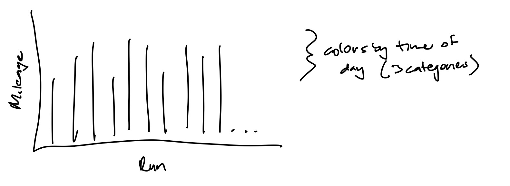
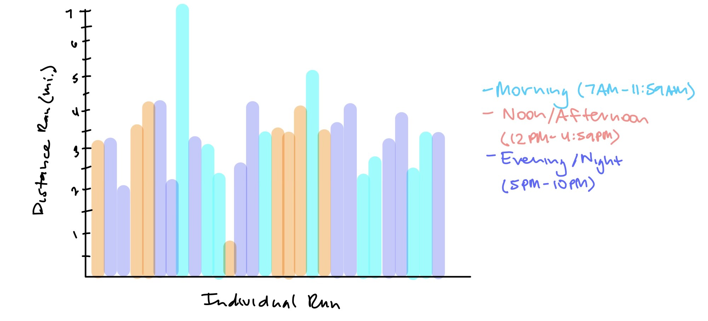
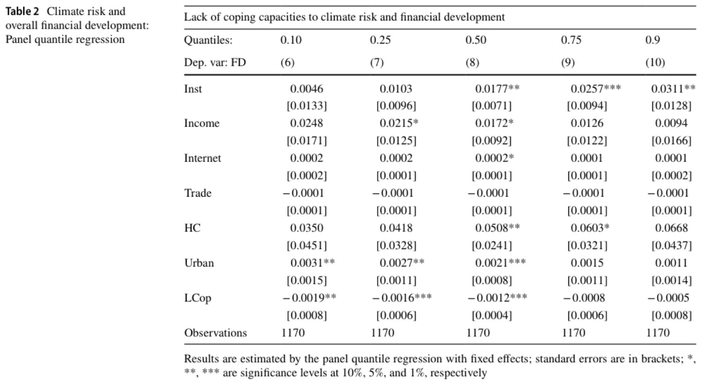

Link to repo: https://github.com/evelynbermudez/bermudez-evelyn_homework-03.git
Problem 1
Set up
reading in packages
# general uselibrary(tidyverse)library(readxl)library(here)library(janitor)# visualizing pairslibrary(GGally)# model selectionlibrary(MuMIn)# model predictionslibrary(ggeffects)# model tableslibrary(gtsummary)library(flextable)library(modelsummary)drought_exp <-read_xlsx(path =here("data", "Valliere_etal_EcoApps_Data.xlsx"),sheet ="First Harvest")# quick look at data str(drought_exp)
drought_exp_clean <- drought_exp %>%clean_names() %>%# nicer column namesmutate(species_name =case_when( # adding column with species scientific names species =="ENCCAL"~"Encelia californica", # bush sunflower species =="ESCCAL"~"Eschscholzia californica", # California poppy species =="PENCEN"~"Penstemon centranthifolius", # Scarlet bugler species =="GRICAM"~"Grindelia camporum", # great valley gumweed species =="SALLEU"~"Salvia leucophylla", # Purple sage species =="STIPUL"~"Nasella pulchra", # Purple needlegrass species =="LOTSCO"~"Acmispon glaber"# deerweed )) %>%relocate(species_name, .after = species) %>%# moving species_name column after speciesmutate(water_treatment =case_when( # adding column with full treatment names water =="WW"~"Well watered", water =="DS"~"Drought stressed" )) %>%relocate(water_treatment, .after = water) # moving water_treatment column after water
Model construction
The null model is:
total biomass is not predicted by the water treatment, SLA, and species
model0 <-lm(total_g ~1, data = drought_exp_clean)
The saturated model is:
total biomass as a function of SLA, water treatment, and species
Diagnostics for model4 confirm that the model conforms to the assumptions of linear models. The residuals and square root of the standardized residuals are evenly distributed across the model predictions, indicating homoscedastic residuals. We can also see that we have normality from the QQ plot since the relationship between the theoretical values and standardized residuals is roughly linear. Finally, there seems to be no outliers that significantly influence the model as visualized in the fourth plot.
From the AC test, we can see that model4, which conforms to linear model assumptions, is the best model that predicts total biomass growth as it has the smallest AIC value and its delta = 0. This means that water treatment and species are the best predictors for total biomass growth from the combinations of the predictor variables.
The reference level for water_treatment is Drought stressed. The reference level for species_name is Acmispon Glaber.
Interpreting the model estimates:
intercept: Acmispon Glaber total biomass in drought stressed treatment when SLA = 0
SLA slope: Across drought treatment and species, w each 1 unit inc in SLA (mm2drymass of leaf), we expect an inc in total mass of -0.00025 which means that w the esti and standard error there is not effect of SLA on total mass.
well watered estimate: across species and SLA, well watered plants tend to be 0.012 +- (figure out how to write the +- in code) 0.02g heavier than drought
Lotus scoparius estimate: insert response here
Stipa pulchra estimate: insert response here
Model predictions
Problem 2
a. I would like to plot a bar graph with each bar being an individual run, and the y-axis representing the total distance in miles of that run. Each bar will be colored by the time of day the run occurred at with the goal of representing what time of day I prefer to run at given my weekly schedule. The three categories will be Morning (7AM - 11:59AM), Noon/Afternoon (12PM - 4:59PM), and Evening/Night (5PM - 10PM). The final plot will be completed on paper using watercolor paint.
b. Paper Sketch

Alt text
c. Visualization Draft

Alt text
d. Artist Statement
This bar plot is meant to highlight the patterns associated with what time I start a run at. In particular, it shows that I go on more runs after 12PM. This aligns with my true preference of running later in the day over the morning. The final draft of the plot will be in watercolor, as it is my second most practiced hobby after running. The significance behind finishing this plot in watercolor is rooted in the associated stress relief I experience when running as I do when painting watercolors. I made my draft on GoodNotes rather than on a paper using water color in order to obtain an idea of the color scheme I would like to use for the three time of day levels more easily by switching highlighter colors. The color of the sky during my runs is what inspired me to color the runs by a bright greyish blue in the morning, a light orange shade for the sun during noon/afternoon, and a purplish blue for the evening sky as the sun is setting.
Problem 3
a. Revisit and summarize (https://doi.org/10.1007/s11356-023-26621-1)
The authors use a baseline regression model (panel quantile regression) with the independent variables being a financial development index, income to represent economic development, trade openness to measure economic openness, and a human capital index, with a country-fixed constant and a time-fixed constant to predict multidimensional financial development. The goal of conducting this analysis is to understand the influences of climate risk on financial development. The

Alt text
b. Visual clarity
The authors did a good job representing their model predictions for the models they ran. Table 2 shows the model predictions for the main explanatory variables used by the authors. Some of the main explanatory variables were composed of other dummy variables or multiple financial indexes. All of the variables were defined in another table with their sample size, mean, standard deviation, minimum, and maximum. Focusing back on Table 2, the authors showed the coefficients for the independent variables predicting financial development using a global sample across five quantiles of the outcome variables. They include the standard errors for the coefficients and denote their significance level with asterisks. Taking a look at one of the explanatory variables, the table effectively communicates that lack of coping capacity (LCop) to climate risk seems to have significant negative effects in the low quantiles (0.10, 0.25, and 0.50) and insignificant effects in high quantiles (0.75 and 0.90) on financial development. Thus, increases in lack of coping capacity toward climate risk looks to negatively affect financial development, especially in countries with low levels of financial development. The underlying data is not shown for any of the variables in the research paper. This decision may be due to the large sample size of the variables for each country across time, so including it may have cluttered the paper.
c. Aesthetic clarity
I would say the authors handled visual clutter well but there could have been larger spacing between the rows. The data:ink ratio is good as all the information on the table is necessary to understand the results of the model yet includes short hands to describe the standard errors and significance levels easily. I believe that the authors should have forgone the abbreviated variable names and used the complete variable names for on the table. The abbreviated variable names are described in another table in the paper, so I can see why the authors decided that the variables on Table 2 could be identified using this other table in order to reduce the text on Table 2.
d. Recommendations
The first improvement I would make to this table is to enlarge the title and make it bold. I believe this would help readers quickly skim the paper faster to see if it includes an analysis of something they are interested in. I would also remove the numbers in parenthesis in the same row as “Dep. var: FD” as they do not seem to mean anything from the discussion of the results. If these numbers do have meaning, I would add an explanation for them. I would also add a bit more spacing between the rows grouped by the different independent variables in order to help readers identify what coefficients and standard errors belong to a variable. Lastly, I would change the independent variable names to be either all abbreviations or full names. Even though there is a reference table to the variable names, it bothers me that some of the names are full words, while others are not.